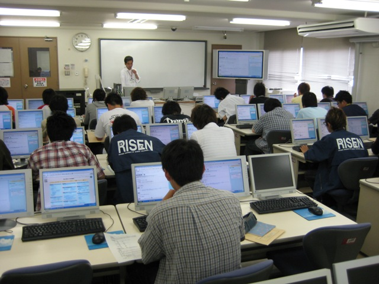
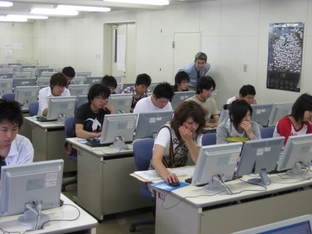
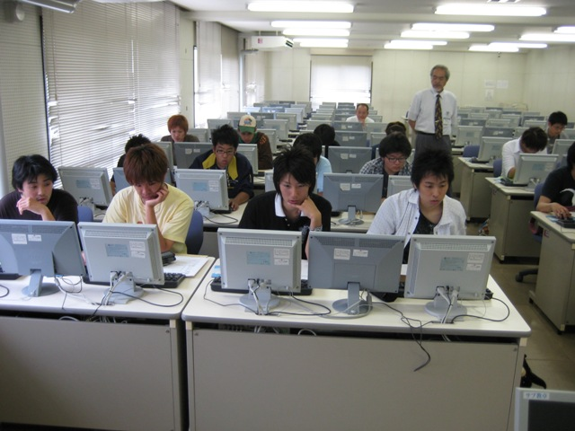
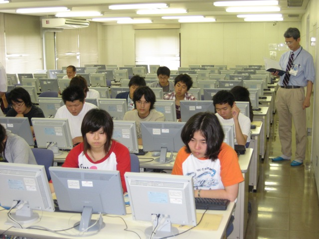

理大図書館を授業の一環として利用（理大専門学校2008編）平成20年6月5日(木)、岡山理科大学専門学校アクアリウム学科１年生の25名が、今年も「魚類繁殖理論」「魚類繁殖実習」の授業の一環として理大図書館で実習を行いました。文献、参考図書などの資料の検索技術等を理解し、アクアリウム学科授業と自由研究活動に利用することを目的としており、館内見学後、ＯＰＡＣ検索の実習を行いました。 （同学科が授業の一環として本学図書館の利用を始めたのは平成１７年度からです。） １１号館２階で、図書館の概要や貸出・返却手続きについての説明を行った後、館内を案内しながら、各階にどの分野の資料が配架されているか、どの様な順番で図書が並べられているかが説明されました。 ３階の魚類関連図書の配架してある書架では、実際にどの様な本があるのかを手にとって見てもらいました。 最後に１階へ移動し、配架されている資料と電動書架の操作方法が説明されました。（見学は時間の都合上、授業に関連の深い分野の図書が置かれている１１号館のみ行いました。）  見学終了後、１１号館６階の情報処理センター第２実習室に移動し、蔵書検索の実習が行われました。 まず、『深海の生物学』というタイトルの図書例に、基本的な検索方法と、表示される情報の見方が説明されました。 次に、タイトルの一部のみ入力して検索したり、複数のキーワードを同時に指定して検索する方法を試してもらいました。  続いて、タイトルのヨミで検索してもらい、ヨミで検索するとより網羅的な結果が得られると同時に、余計な物も検索されてしまうことを試してもらいました。（海豚の本を探すとき「いるか」で検索すると「モバイル活用法（もば  最後に、『水族館』と言うタイトルで検索すると、多くの本が検索されてしまうので、著者や配架されている場所などの他の条件と組み合わせて、もっと絞り込んだ検索をする方法を試してもらいました。  残りの時間は、各自思い思いに検索を試してもらいながら、理大の図書館で本を借りたい方には「図書館利用願（学部生に準ずる者）」を記入してもらいました。 |